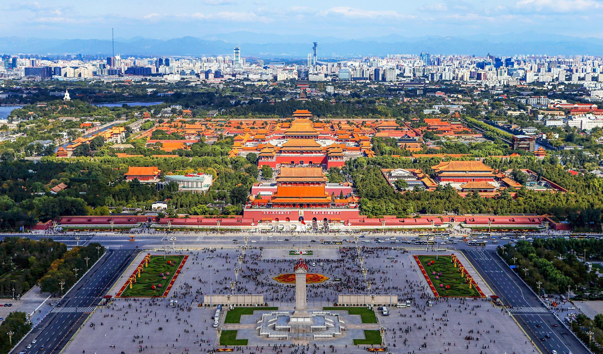
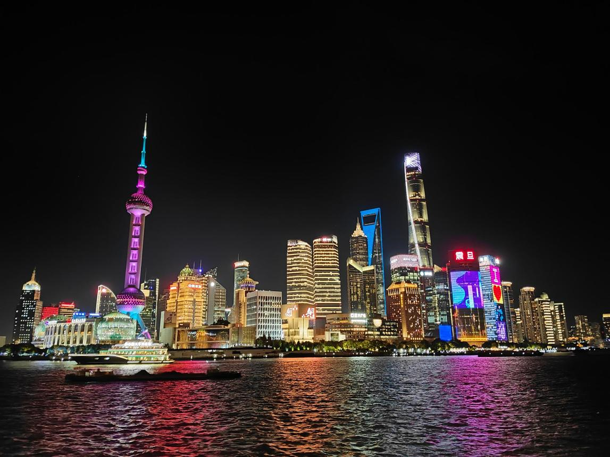

Pequim
Capital da China, Pequim reúne história, cultura e arquitetura tradicional. A Cidade Proibida e a Grande Muralha são algumas de suas principais atrações.
Descubra a China além das fronteiras.
A China é um país de dimensões impressionantes, com cidades modernas, monumentos históricos e paisagens naturais extraordinárias. Conheça três destinos incríveis!

Capital da China, Pequim reúne história, cultura e arquitetura tradicional. A Cidade Proibida e a Grande Muralha são algumas de suas principais atrações.

Uma das cidades mais modernas da China, Xangai impressiona por seus arranha-céus, tecnologia e paisagens urbanas.

Conhecida por suas montanhas de formatos impressionantes, Zhangjiajie é um destino perfeito para quem aprecia a natureza.